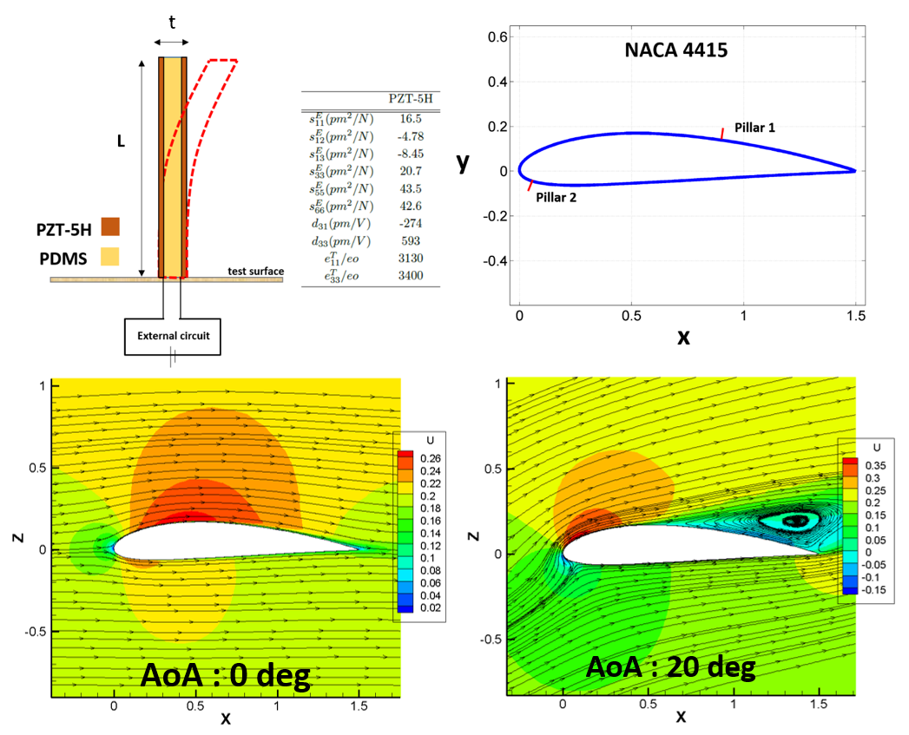
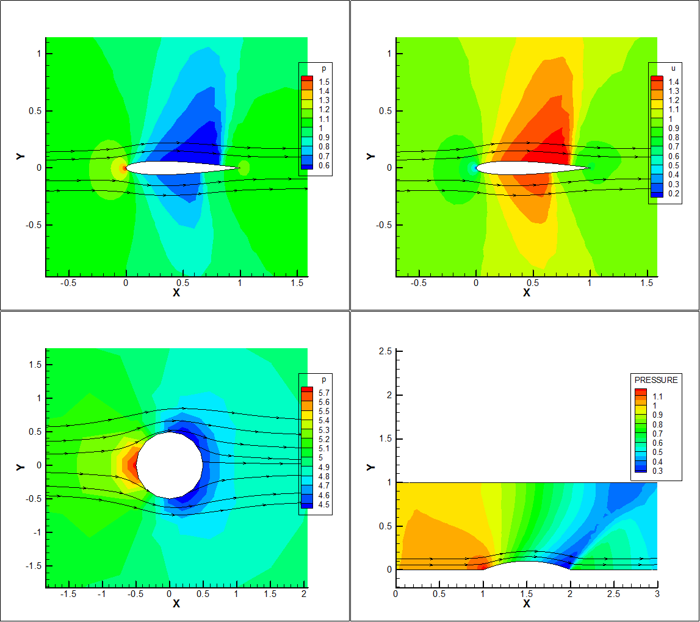
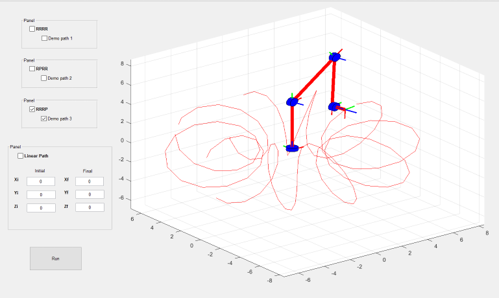
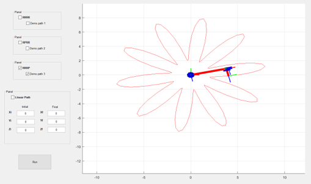

Projects
Piezeo-electric artifical hair sensor

- A cantilever bimorph design was investigated for the identification of stagnation point and separation point.
- Real-time knowledge of the incoming aerodynamic flow can be crucial for stall sensing, enhanced flight performance, envelope protection and control.
- Energy formulation was used to derive the model for the bimorph piezo-system and Euler-Bernoulli beam theory was assumed in this formulation.
- CFD data was taken from previous research where Reynolds-Averaged Navier Stokes equations were solved for flow over wings and airfoils through post-stall angles of attack for Re = 3 million for NACA 4415.
- Boundary layer information was extracted from the CFD data at the chord locations where the micropillar was investigated.
- The charge output and pillar tip deflection were calculated for the pillars due to the boundary layer forces.
Advanced Dynamics Simulations
- Gyroscopic precession and nutation were modeled to study the behavior of the simulations in comparison with real experimental setup.
- The equations of motion were derived for this multi-body system using Newton-Euler approach and solved in MATLAB.
- Multi-body motion for a 4-mass system was modeled using quaternions.
- The chaotic motion of double pendulum was simulated using three different approaches: Newton-Euler, Langrangian and Kane's method. The focus was to understand the complexities involved in solving a dynamic system with three different methods.
Computational Fluid Dynamics

- Discontinuous Galerkin (finite volume) program for the compressible euler equations in unstructured grids
-
- 2D Euler compressible equations were solved using Discrete Galerkin method and multi stage Runge Kutta time marching scheme for flow past arbitrary bodies using FORTRAN.
- Three different cases were considered to correspond to the three flow regimes, i.e. subsonic, supersonic and transonic.
- The effectiveness of the DG method is observed for all the cases using Van leer flux splitting method.
- Finite Element and Finite Volume codes
-
- A 2-D incompressible potential solver was programmed in FORTRAN to solve for the velocity potential on an unstructured grid in the two given cases: flow through a channel with a bump at the lower surface and flow past a cylinder.
- Developed CFD codes for solution of Incompressible Navier-Stokes Equations using Finite Volume Methods on a structured grid for a driven cavity and for flow in a divergent channel (with and without an immersed body) using MATLAB.
Robotic Manipulator Kinematics
- Robotic manipulator motions were modeled and simulated for teaching aid in the graduate level robotics course.
- Developed a GUI to demonstrate the forward and inverse kinematics of three different 3D manipulators.
- Animated the inverse kinematic motion from the user given input states to the end states and incorporated complex motions in the GUI code for teaching demonstrations.

